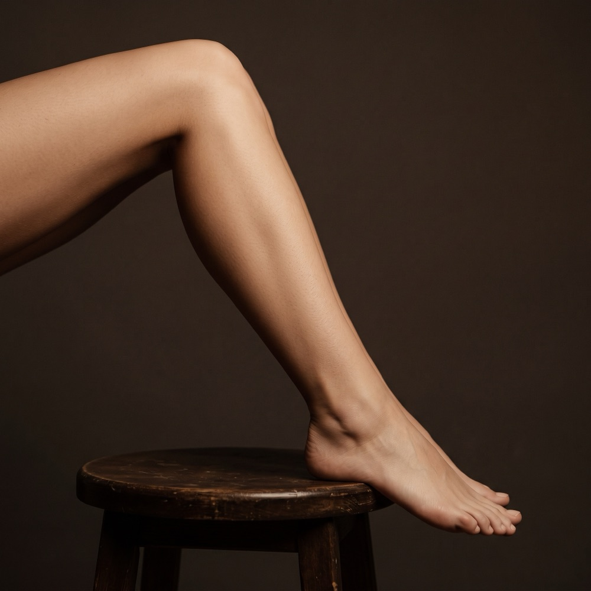

Problem
Nadmierne owłosienie — jak skutecznie się go pozbyć
Ilość, grubość i tempo wzrostu owłosienia to w dużej mierze cechy indywidualne, zależne od genetyki i gospodarki hormonalnej — nie efekt zaniedbania. W INSTYTUTem.™ oferujemy trwałe rozwiązanie, niezależnie od obszaru i rodzaju owłosienia.
Cena już od:
179
zł
Dostępne dla wybranych zabiegów na recepcji w salonie
Dlaczego powstaje
Anatomia problemu: od czego zależy ilość owłosienia?
Gęstość, grubość i tempo odrastania owłosienia różnią się znacznie między osobami — wpływają na to czynniki, których nie da się zmienić samą pielęgnacją czy stylem życia.
01 Predyspozycje genetyczne
Gęstość i grubość owłosienia jest w dużej mierze dziedziczona — różni się między osobami niezależnie od nawyków pielęgnacyjnych czy stylu życia.
02 Zmiany hormonalne
Wahania hormonalne mogą wpływać na tempo wzrostu i grubość owłosienia w niektórych partiach ciała — to jeden z powodów, dla których jego ilość bywa różna na różnych etapach życia.
03 Indywidualna budowa mieszków włosowych
Liczba i aktywność mieszków włosowych w danej okolicy ciała to cecha osobnicza — dlatego to samo miejsce u różnych osób może mieć zupełnie inną gęstość owłosienia.
Zabiegi ukierunkowane
Zaprojektowane, by trwale usunąć niechciane owłosienie
Jeden zabieg, dopasowany do każdej partii ciała i twarzy — od małych obszarów po duże powierzchnie, zawsze tą samą, sprawdzoną technologią lasera diodowego.

Epilacja Laserowa LightSheer®
od 179 zł
15 min – 1 godz. 5 min
Laser diodowy, który trwale niszczy mieszki włosowe — sprawdza się na każdej partii ciała i twarzy, od małych obszarów (pachy, wąsik) po duże powierzchnie (nogi, plecy).
Dowiedz się więcejFAQ
Najczęściej zadawane pytania
Jaki obszar obejmuje ten zabieg?
Epilacja laserowa LightSheer® sprawdza się na każdej partii ciała i twarzy — od małych obszarów (broda, wąsik, pachy, linia bikini) po duże powierzchnie (nogi, plecy). Dokładny plan i dobór wariantu ustalimy podczas DERMOkonsultacji.
Czy da się całkowicie pozbyć niechcianego owłosienia?
Celem zabiegu jest trwałe zredukowanie owłosienia poprzez zniszczenie mieszków włosowych — wymaga to jednak kilku zabiegów przeprowadzanych w odstępach czasowych, nie jednej sesji. Szczegóły znajdziesz na stronie samego zabiegu.
Czy zabieg jest bezpieczny dla każdego rodzaju skóry?
O tym, czy zabieg będzie mógł się odbyć, decyduje kosmetolog podczas darmowej konsultacji z próbą laserową, która sprawdza brak przeciwwskazań i dobiera bezpieczne parametry do Twojej karnacji.
Ile trwa, zanim zobaczę pierwsze efekty?
Pierwsze efekty widać niemal od razu po zabiegu, ale trwały efekt gładkiej skóry wymaga kilku zabiegów w odstępach 6–12 tygodni. Realistyczny plan i orientacyjną liczbę zabiegów ustalimy podczas DERMOkonsultacji.